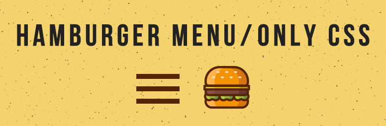

CSSのみでハンバーガーメニューをつける方法

JavaScriptを使わなくても、CSSのみで開いたり閉じたりするメニューを作ることができます。
今回はその方法をご紹介します！
HTMLの記述
<nav class="gMenu">
<input class="menu-btn" type="checkbox" id="menu-btn">
<label class="menu-icon" for="menu-btn">
<span class="navicon"></span>
</label>
<ul class="menu">
<li><a href="#">menu1</a></li>
<li><a href="#">menu2</a></li>
<li><a href="#">menu3</a></li>
</ul>
</nav>HTMLの解説
HTMLの挿入場所
どこに配置しても基本的には動くと思いますが、headerタグ内の最後やbodyの終了タグの直前に配置すると問題は起こりにくいと思います。
HTMLの解説とポイント
ハンバーガーメニューは多くの場合、グローバルメニューとして使用されるのでnavタグを使用しています。ご自身のコードに合わせてdivタグなどに変更可能ですが、class="menu-btn"をつけるようにしてください。
<input class="menu-btn" type="checkbox" id="menu-btn">メニューの開閉状態を決めるためのチェックボックスです。ボックス自体は邪魔なのでCSSで非表示にしています。
<label class="menu-icon" for="menu-btn">
<span class="navicon"></span>
</label>ハンバーガメニューと呼ばれる由来でもある三本線（メニューボタン）を表示している部分です。spanタグで線を引き、それと同じ大きさの線をCSSの疑似要素（::before,::after）で追加して三本にしています。
labelタグでマークアップしてfor="menu-btn"属性をつけることで、label要素をクリックした時に前述のチェックボックスのON/OFFを切り替えることができます。 これは、チェックボックスがCSSで非表示になっていても動作します。
<ul class="menu">
<li><a href="menu1.html">menu1</a></li>
<li><a href="menu2.html">menu2</a></li>
<li><a href="menu3.html">menu3</a></li>
</ul>表示されるメニュー部分です。CSSで整形しているのと、overflow:hidden;max-height:0;を使用してメニューボタンが押されるまでは表示されないようになっています。
大まかな仕組みの説明
擬似クラスセレクタ「:checked」と一般兄弟結合子「~」をうまく組み合わせてメニューの表示と非表示を切り替えています。
- 1. メニューボタンを押すとチェックボックスのON/OFFが切り替わる
- 2. チェックボックスがONの時のCSSは「:checked」で指定可能
- 3. チェックボックスがONの時のメニューボタンやメニューのCSSは「:checked」と「~」の組み合わせで指定可能
- 4. チェックボックスがONの時 ⇒ メニューを表示。メニューボタンを✕に。
- 5. チェックボックスがOFFの時 ⇒ メニューを非表示。メニューボタンを三本線に。
CSSの記述
/* メニューを画面上部に固定表示しています */
.gMenu {
position: fixed;
right: 0;
top: 0;
width: 100%;
z-index: 99;
}
/* メニューアイコンを画面右上に固定しています */
.gMenu .menu-icon {
cursor: pointer;
position: absolute;
right: 10px;
top: 12px;
padding-top: 5px;
height: 12px;
}
/* メニューアイコン（三本線）の真ん中の線です */
.gMenu .menu-icon .navicon {
background: #ffc107; /* 色は自由に変更可能です */
display: block;
height: 2px; /* 太さ */
width: 31px; /* 長さ */
position: relative;
transition: background .4s ease-out; /* 形が変わる時のアニメーション */
}
/* メニューアイコン（三本線）の上と下の線を疑似要素で追加 */
.gMenu .menu-icon .navicon::before,
.gMenu .menu-icon .navicon::after {
background: #ffc107; /* 色は自由に変更可能です */
content: '';
display: block;
height: 100%;
position: absolute;
transition: all .4s ease-out; /* 形が変わる時のアニメーション */
width: 100%;
}
.gMenu .menu-icon .navicon::before {top: 10px;} /* 位置を上にずらしています */
.gMenu .menu-icon .navicon::after {top: -10px;} /* 位置を下にずらしています */
/* 表示されるメニューです */
.gMenu .menu {
background-color: rgba(255,255,255,0.9);
overflow: hidden;
max-height: 0; /* ★最初は高さを0にして非表示状態に */
transition: max-height .6s; /* 表示されるときのアニメーション */
text-align: center;
}
/* メニュー部分のデザインです */
.gMenu .menu li:first-of-type {
padding-top: 50px;
}
.gMenu .menu li a {
display: block;
padding: 24px 20px;
text-decoration: none;
text-transform: uppercase;
}
.gMenu .menu li a:hover {
background-color: #f4f4f4;
}
/* チェックボックスは常に非表示です */
.gMenu .menu-btn {
display: none;
}
/* ▼▼▼以下はチェックボックスがONの時の状態です▼▼▼ */
.gMenu .menu-btn:checked ~ .menu {
max-height: 338px; /* ★チェックボックスがオンの時高さを338pxにして表示させます */
transition: max-height .6s;
}
/* メニューボタンの中央の線を非表示に */
.gMenu .menu-btn:checked ~ .menu-icon .navicon {background: transparent;}
/* メニューボタンの上下の線を45度傾けて✕印を作ります */
.gMenu .menu-btn:checked ~ .menu-icon .navicon::before {transform: rotate(-45deg);top: 0;}
.gMenu .menu-btn:checked ~ .menu-icon .navicon::after {transform: rotate(45deg);top: 0;}■CSSのポイント
.gMenu .menu-btn:checked ~ .menu {CSSの読み込み例
CSSを既存のCSSファイルに追記する場合
上記の「CSSの記述」にあるコードを既存のCSSの一番最後にコピー＆ペーストしてください。
CSSを外部ファイルとして読み込む場合
<link rel="stylesheet" href="menu.css">デモ
動作確認用ページはこちら